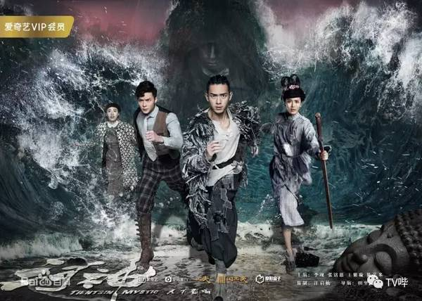
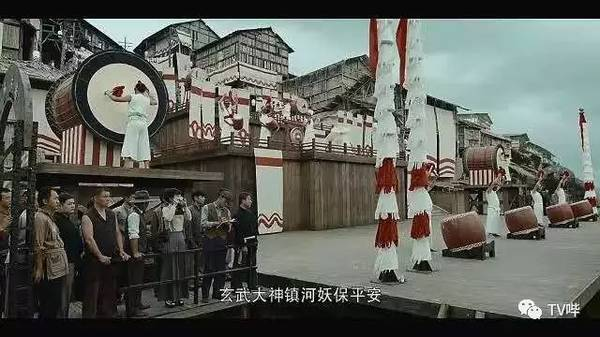
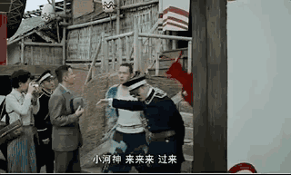
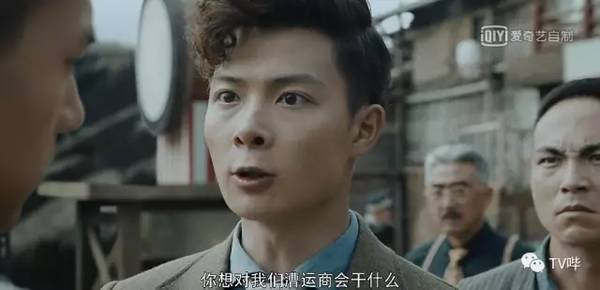
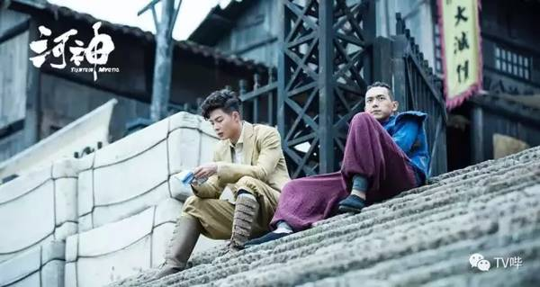
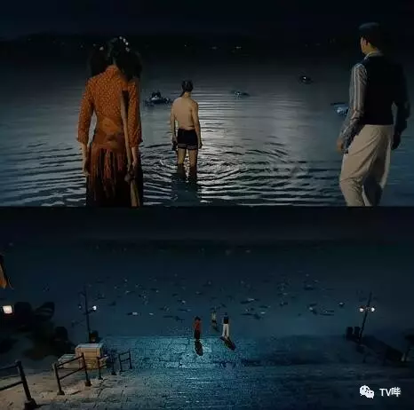

把原著改得面目全非 为何大家还要买《河神》的账？
首先大家看一下河神精致烧脑的片头吧
基本信息
《河神》由爱奇艺、工夫影业联合出品的悬疑探案网络剧，由田里执导，李现、张铭恩、王紫璇、陈芋米等领衔主演。 该剧改编自天下霸唱的小说《河神1·鬼水怪谈》，讲述了民国年间的天津卫水患频发，河中怪力乱神之事不绝，郭得友、顾影等人为了阻止魔古道的复辟，卷入了一桩桩离奇的案件之中。 该剧于2017年7月19日在爱奇艺视频独家播放.
河神至今为止播放量已达十五亿
 精彩剧照剧情简介
民国年间的天津卫水患频发，河中怪力乱神之事不绝。 警察局外编五河捞尸队队长郭得友（李现饰）深得师傅“老河神”的真传，一手点烟辨冤的绝技，告慰冤魂无数。漕运商会会长离奇死于河中，郭得友背负嫌疑与会长之子丁卯（张铭恩饰），青梅竹马的女伴顾影（王紫璇饰），以及天津市政府秘书长之女肖兰兰（陈芋米饰）一同查清案件，发觉种种诡谲的迹象都指向了二十年前的一段往事。当时一个叫做“魔古道”的邪教组织肆虐京冀一带，二十年后，郭得友和丁卯再次发现了“魔古道”的踪迹，郭得友、丁卯、顾影、肖兰兰四人为了阻止魔古道的复辟，卷入了一桩桩惊悚离奇的案件之中。
角色介绍
郭得友
演员 李现
配音 路知行
伍河捞尸队队长，被誉为“老河神”的郭淳抚养大，水性极好。水下捞尸，岸上断案。被百姓尊称为“小河神”。感官和触觉拥有超乎常人的敏感，但身体虚弱。有“点烟辨冤”的绝技。玩世不恭、一身痞气、爱财、好吃、熟悉天津城各种江湖门道。一旦认真起来，也透着一股狠劲。
丁卯
演员 张铭恩
配音 黄斌
漕运商会的独苗少爷，留德学法医归国。不愿继承商会生意，一心追查杀父一案。思维理性、心思缜密、相信科学、反对封建迷信，但为人处事一根筋，不懂得变通。初归国，他的观念受到天津城江湖老理的冲击，但随着案件的推进，渐渐也开始融入眼前这个新的世界。
顾影
演员 王紫璇
活泼可爱，大大咧咧，天生神力，武艺高强。从小被神婆养大，但是对占卜、测相、看风水却只是略懂皮毛。与郭得友青梅竹马。长大后跟着郭得友，丁卯一起经历奇险。
肖兰兰
演员 陈芋米
市政府肖秘书长之女，报社记者。大家闺秀仪表端庄、崇尚女性独立，头脑灵活处变不惊，常常能掌握案件的第一手资料。肖家与漕运商会积怨已久，但她还是被丁卯的才华和行事风格所吸引。
各大媒体对剧集评价
该剧在小说《河神·鬼水怪谈》的基础上，坚持回归好故事的本质，情节设定从漕运商会浮尸案展开，剧情环环相扣，极具美剧悬疑推理风格。加之电影剪辑手段的巧妙运用，在确保原有剧情悬念的同时，去掉冗余复杂的情节，使剧集的节奏更加紧凑、明快。该剧制作精良，拥有极富张力的故事表现，无论是气势恢宏的拜河大典，大气磅礴的漕运码头，亦或是触目惊心的百条浮尸，在制作上也不遗余力。（消费日报评）
《河神》不仅做到了维持原著的魂，更做到了形的升级。评书式的叙事以前情提要的形式，巧妙的植入了每一集的开篇。它有独树一帜的风格，时而用上帝视角俯瞰天津卫，时而通过郭得友、丁卯、顾影等主要角色的穿着打扮、道具器物，对民国天津极尽描摹，更透露出一种独具中国韵味的奇幻感 。（凤凰娱乐评）
该剧靠视听语言来推进情节、塑造人物。故事涉及了民间祭祀、案情侦破等元素，恰好为视听语言的发挥提供了充分的空间。大量航拍、水下拍摄的运用，不仅很好地服务于剧情，更增强了视听震撼感。（法制晚报评）
原书粉如此喜欢这部剧的理由（书粉的评价）
被第一集拜河大典带入坑，被人物造型惊的目瞪口呆，之后被这部剧制作的精良和编剧的功力折服。
本人是天下霸唱的书粉，《河神》原著看了四五遍，有声小说听了四五遍。看过原著的朋友都清楚，原著是存在很大问题的，天下霸唱最不擅长的就是多线叙事，这在《鬼吹灯》里体现的尤为明显，八部《鬼吹灯》都是一条线写下去的，尽管有写主角往事盗墓前辈的轶事，但线是平铺下去的，即使有铺垫也是先按顺序铺垫后面再解释。
而在《河神》里，明显感觉到作者叙事结构的单薄，他很想在讲故事的同时给读者讲一些天津卫的风土人情，这样造成的后果就是，主角郭得友在捉拿连化清过程中，读者经常因为作者讲民俗而跳戏，等作者写完民俗继续写故事，原来的那种故事的氛围就被削弱了，而且某些与故事关系不大的风土人情作者也通过列序号一样的方式强行讲述，比如老龙头火车站尸变，原著中与故事没有半毛钱关系，也被作者写了出来。好在天下霸唱丰富的民俗知识储备、天马行空的想象力和过硬的笔力弥补了叙事结构的不足，整部《河神》读起来依然引人入胜。
但是，原著的叙事结构完全改编成影视作品是万万不可的。小说可以跳戏讲点别的再回来，网剧要是动不动来一段和剧情无关的内容，观众就会不知所云，而且会造成剧情拖沓。那这些与剧情无关的内容可不可以删掉呢？也不行，因为这些风土人情是《河神》的精髓所在，是原著的灵魂。这也就是我想说的，这部剧的编剧是一个真正的天才！
原著中，开场郭得友的师父就已经过世了，编剧把主角年轻化，“复活”了师父，将原著中几笔带过的技能点烟辨冤具象成了一项主角独特的绝技，将原著中郭得友的小师弟丁卯多加一重身份变成了漕运商会大少爷，通过漕运商会的庞大结构将连化清、老龙头火车站尸变、海河浮尸案、三岔河口沉尸案等众多原著中支离破碎的片段缀连起来，故事比原著复杂的多也合理的多，要知道，原著中郭得友一行人知道连化清的身世居然是夜宿破庙，听一个被连化清害死的乞丐亡灵讲的，猎奇有余，清理不足。同时，作者还加进去了女主和女配这样适应市场的改编，而且最重要的是，女性角色确实对剧情有帮助，而不仅仅是为了跟男主男二谈场恋爱。
演员的演技也很出彩，除了丁卯的演员张铭恩情绪戏略显单薄以外，其他角色都有板有眼，饰演主角郭得友的演员李现身上的痞气让这个人物丰满有个性而接地气，女主台词功底不错，演技也OK，声音五星好评。最让我惊艳的，是一众配角，仙风道骨的老河神、承包了本剧九成以上笑点的吃货老神婆和付队长、忍辱负重的胡管家……包括露面仅仅几分钟的鬼市黑稳婆、盗墓贼、警局警员等等一众配角演技炸裂。
画面富有年代质感，道具用心，即使是造型师放飞自我做出来的奇葩造型在带入剧情之后也看着很顺眼。剧中多次出现的点烟辨冤异空间设计新意，目前追到十三集前后，中间一场胡总管讲述剿灭魔古道往事的动漫简直艺术感炸裂，停尸间诈尸甚至拍出了中国版釜山行的味道。这部剧越到后面，越能体会到编剧的强大、剧组的用心、演员的敬业！
剧情梗概，涉及剧透慎点
《河神》开篇描述了故事发生的年代背景， 民国时期的天津卫，百姓们靠水吃饭。按照惯例请神婆主持拜河大典，请河神，镇河妖。
介绍完场景后不拖沓，在“抓王八”比赛的时候，捞尸队就在河里发现一大一小两具“漂子”（尸体）。婴儿捞上来了，可大的漂子被绑在河底的玄武像上，“普通村民”（捞尸队普通队员）是无能为力的，需要一个带有“神职”的人物出场，于是乎男主角“小河神”郭得友出场。
于是一个健步蹬下水，捞上来了一具男尸——漕运商会的会长丁义秋——是另一位男主丁卯的父亲。
于是展开了围绕郭得友和丁卯的故事，二人由开始的互不顺眼。
到后来的齐心断奇案。变成了一生一世一双人的师兄弟。
先后经历了薛府断案
海河百具浮尸，
大战活尸等等惊险大戏。